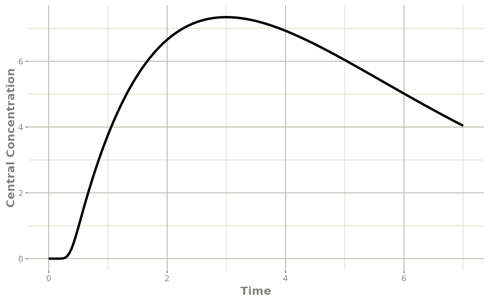

rxode2 Transit Compartment Models
2022-09-02
Source:vignettes/rxode2-transit-compartments.Rmd
rxode2-transit-compartments.RmdSavic 2008 first introduced the idea of transit compartments being a mechanistic explanation of a a lag-time type phenomena. rxode2 has special handling of these models:
You can specify this in a similar manner as the original paper:
## rxode2 2.0.8 using 1 threads (see ?getRxThreads)
## no cache: create with `rxCreateCache()`
mod <- rxode2({
## Table 3 from Savic 2007
cl = 17.2 # (L/hr)
vc = 45.1 # L
ka = 0.38 # 1/hr
mtt = 0.37 # hr
bio=1
n = 20.1
k = cl/vc
ktr = (n+1)/mtt
## note that lgammafn is the same as lgamma in R.
d/dt(depot) = exp(log(bio*podo(depot))+log(ktr)+n*log(ktr*tad(depot))-
ktr*tad(depot)-lgammafn(n+1))-ka*depot
d/dt(cen) = ka*depot-k*cen
})
et <- eventTable()
et$add.sampling(seq(0, 7, length.out=200))
et$add.dosing(20, start.time=0, evid=7)
transit <- rxSolve(mod, et)
plot(transit, cen, ylab="Central Concentration")
Another option is to specify the transit compartment function transit syntax. This specifies the parameters transit(number of transit compartments, mean transit time, bioavailability). The bioavailability term is optional.
The same model can be specified by:
mod <- rxode2({
## Table 3 from Savic 2007
cl = 17.2 # (L/hr)
vc = 45.1 # L
ka = 0.38 # 1/hr
mtt = 0.37 # hr
bio=1
n = 20.1
k = cl/vc
ktr = (n+1)/mtt
d/dt(depot) = transit(n,mtt,bio)-ka*depot
d/dt(cen) = ka*depot-k*cen
})
et <- eventTable();
et$add.sampling(seq(0, 7, length.out=200));
et$add.dosing(20, start.time=0, evid=7);
transit <- rxSolve(mod, et)
plot(transit, cen, ylab="Central Concentration")
A couple of things to keep in mind when using this approach:
This approach implicitly assumes that the absorption through the transit compartment is completed before the next dose begins
Different types of doses (ie bolus/infusion) to the compartment affect the time after dose calculation (
tad) which is used in the transit compartment calculation. These (therefore) are not currently supported. The most stable way is to usetad(cmt)andpodo(cmt), this way doses to other compartments do not affect the transit compartment calculation.Internally, the
transitsyntax uses either the currently defined cmtd/dt(cmt)=transit(...), orcmt. If the transit compartment is used outside of ad/dt()(not recommended), thecmtthat is used is the lastd/dt(cmt)defined it the model. This also means compartments do not affect one another (ie a oral, transit compartment drug dosed immediately with an IV infusion)